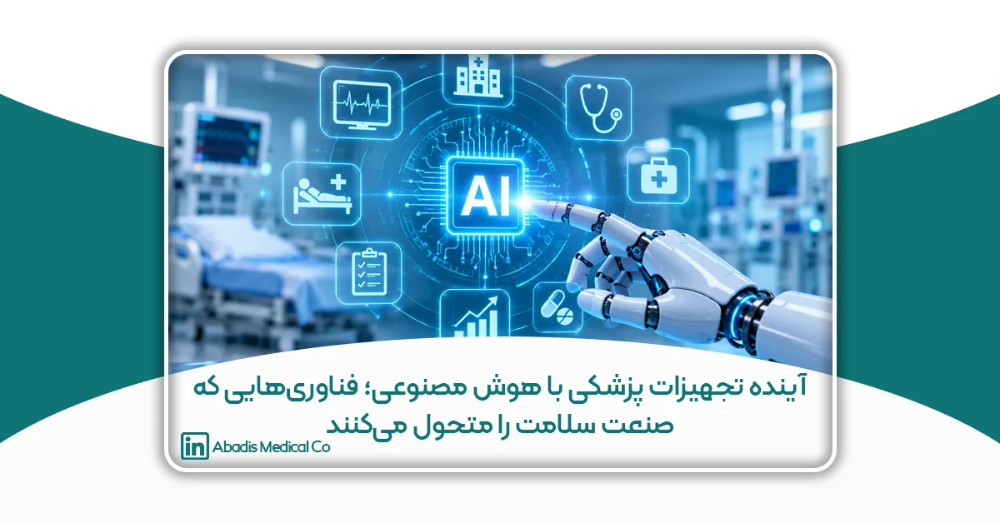
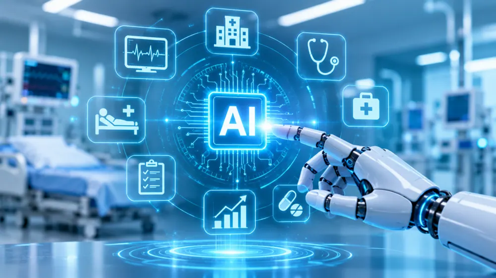

هوش مصنوعی در تجهیزات پزشکی؛ از تولید محصولات هوشمند تا مدیریت شرکتها و بیمارستانها
چکیده
هوش مصنوعی (Artificial Intelligence یا AI) به یکی از فناوریهای اثرگذار در صنعت تجهیزات پزشکی و خدمات سلامت تبدیل شده است. کاربرد این فناوری دیگر به تحلیل تصاویر رادیولوژی محدود نیست؛ بلکه طراحی محصولات پزشکی، کنترل کیفیت تولید، پایش وضعیت بیماران، مدیریت موجودی، پیشبینی تقاضا، خدمات پس از فروش و تصمیمگیری مدیریتی را نیز در بر میگیرد.
در تجهیزات پزشکی مبتنی بر هوش مصنوعی، الگوریتمها میتوانند دادههای بالینی یا سیگنالهای دستگاه را تحلیل کنند و خروجیهایی مانند شناسایی الگو، پیشبینی خطر یا پیشنهاد به متخصص ارائه دهند. در سوی دیگر، شرکتهای تولیدکننده تجهیزات پزشکی میتوانند از AI برای تحلیل دادههای تولید، مدیریت زنجیره تأمین و بهینهسازی فرآیندهای سازمانی استفاده کنند.
با وجود این ظرفیتها، بهرهگیری از هوش مصنوعی در حوزه سلامت مستلزم اعتبارسنجی، حفاظت از اطلاعات، نظارت انسانی و رعایت الزامات قانونی است. این مقاله کاربردهای علمی و عملی هوش مصنوعی را در تجهیزات پزشکی، شرکتهای تولیدکننده و مراکز درمانی بررسی کرده و فرصتها، محدودیتها و مسیر پیادهسازی مسئولانه آن را توضیح میدهد.
هوش مصنوعی چیست و چگونه وارد صنعت تجهیزات پزشکی شده است؟
هوش مصنوعی به مجموعهای از روشهای محاسباتی گفته میشود که به سیستمها امکان میدهند وظایفی مانند تشخیص الگو، تحلیل داده، پیشبینی و تولید محتوا را انجام دهند؛ وظایفی که در بسیاری از موارد به تواناییهای شناختی انسان شباهت دارند.
یکی از شاخههای مهم آن، یادگیری ماشین (Machine Learning) است. در این روش، الگوریتم بهجای آنکه برای تمام شرایط بهصورت جداگانه برنامهریزی شود، الگوهای آماری را از دادههای آموزشی استخراج میکند.
یادگیری عمیق (Deep Learning) نیز زیرمجموعهای از یادگیری ماشین است که با استفاده از شبکههای عصبی چندلایه، امکان تحلیل دادههای پیچیده مانند تصاویر پزشکی، سیگنالهای قلبی و دادههای چندمتغیره را فراهم میکند.
هوش مصنوعی مولد (Generative AI) شاخه دیگری است که میتواند متن، تصویر، کد و محتوای جدید تولید کند. کاربرد آن در صنعت تجهیزات پزشکی بیشتر در تهیه مستندات اولیه، جستوجوی اطلاعات، تحلیل متون و پشتیبانی از فرآیندهای اداری مطرح است.
تفاوت این فناوریها اهمیت زیادی دارد؛ زیرا یک الگوریتم تشخیص ضایعه در تصویر پزشکی با یک دستیار متنی که پیشنویس گزارش فروش تولید میکند، از نظر کاربرد، سطح خطر و الزامات اعتبارسنجی یکسان نیست.
سازمان جهانی بهداشت نیز در راهنماهای خود تأکید کرده است که استفاده از هوش مصنوعی در سلامت باید با توجه به ایمنی، اثربخشی، کیفیت داده و حقوق بیماران ارزیابی شود.
تجهیزات پزشکی مبتنی بر هوش مصنوعی چیست؟
تجهیزات پزشکی مبتنی بر هوش مصنوعی (AI-Enabled Medical Devices) محصولاتی هستند که یک یا چند عملکرد آنها از الگوریتمهای هوش مصنوعی استفاده میکند.
این محصولات لزوماً دستگاههای فیزیکی مستقلی نیستند. گاهی هوش مصنوعی در نرمافزار یک دستگاه تصویربرداری قرار دارد و گاهی نرمافزار مستقلی است که برای هدف پزشکی مشخص طراحی شده است.
برای مثال، یک نرمافزار میتواند تصاویر سیتیاسکن را تحلیل کند و نواحی مشکوک را برای بررسی پزشک مشخص سازد. محصول دیگری ممکن است سیگنال الکتروکاردیوگرام را بررسی کند و الگوهای مرتبط با یک اختلال قلبی را شناسایی کند.
بر اساس اطلاعات منتشرشده توسط سازمان غذا و داروی آمریکا (FDA)، تا سپتامبر ۲۰۲۶ بیش از ۱۶۰۰ تجهیز پزشکی مبتنی بر هوش مصنوعی مجوز بازاریابی در آمریکا دریافت کردهاند. این آمار نشاندهنده گسترش کاربرد فناوری است، اما به معنای یکسان بودن عملکرد یا اثربخشی همه این محصولات نیست
مهمترین کاربردهای هوش مصنوعی در محصولات و دستگاههای پزشکی
هوش مصنوعی در تصویربرداری پزشکی
تصویربرداری پزشکی از شناختهشدهترین حوزههای کاربرد AI است. سیستمهای مبتنی بر یادگیری عمیق میتوانند در تحلیل تصاویر رادیولوژی، سیتیاسکن، MRI و ماموگرافی به متخصصان کمک کنند.
برخی کاربردها شامل شناسایی نواحی مشکوک، اندازهگیری ساختارهای آناتومیک، تقسیمبندی اندامها و اولویتبندی تصاویر نیازمند بررسی سریعتر هستند.
برای نمونه، در فهرست FDA محصولاتی مانند MammoScreen و AI-Rad Companion Brain MR دیده میشوند که برای کاربردهای مشخص مرتبط با تصویربرداری پزشکی مجوز دریافت کردهاند.
البته وجود هوش مصنوعی در یک سیستم تصویربرداری به معنای تشخیص قطعی بیماری نیست. عملکرد هر محصول باید بر اساس کاربرد تأییدشده، جمعیت هدف و نتایج اعتبارسنجی آن ارزیابی شود.
هوش مصنوعی در پایش قلب و علائم حیاتی
دستگاههای ثبت نوار قلب، پایش ریتم قلب و برخی تجهیزات پوشیدنی میتوانند از الگوریتمهای هوشمند برای تحلیل سیگنالها استفاده کنند.
این الگوریتمها ممکن است در شناسایی الگوهای غیرطبیعی، طبقهبندی رویدادها و هشداردهی نقش داشته باشند.
برای مثال، تحلیل حجم زیادی از دادههای ثبتشده توسط تجهیزات پایش قلب میتواند به کاهش زمان بررسی دستی کمک کند؛ اما هشدارهای کاذب، خطاهای تشخیص و کیفیت نامناسب سیگنال همچنان از محدودیتهای مهم هستند.
به همین دلیل، خروجی چنین سیستمهایی باید در چارچوب کاربرد تأییدشده و تحت نظارت متخصصان تفسیر شود.
هوش مصنوعی در آندوسکوپی و جراحی
در برخی سیستمهای آندوسکوپی، الگوریتمهای تحلیل تصویر میتوانند نواحی مشکوک مانند پولیپها را هنگام مشاهده تصویر مشخص کنند.
در جراحی نیز هوش مصنوعی میتواند در برنامهریزی پیش از عمل، تحلیل تصاویر، ناوبری جراحی و بررسی دادههای عملیاتی مورد استفاده قرار گیرد.
باید میان ربات جراحی و ربات دارای هوش مصنوعی تفاوت قائل شد. هر ربات جراحی الزاماً مبتنی بر AI نیست و بسیاری از سیستمهای رباتیک صرفاً حرکات جراح را با دقت مکانیکی کنترل میکنند.
هوش مصنوعی در تجهیزات آزمایشگاهی
آزمایشگاههای تشخیص پزشکی نیز از حوزههای مستعد استفاده از یادگیری ماشین هستند.
الگوریتمهای تحلیل تصویر میتوانند در بررسی نمونههای میکروسکوپی، طبقهبندی سلولها و شناسایی برخی الگوهای آزمایشگاهی به متخصصان کمک کنند.
در چنین کاربردهایی، کیفیت نمونه، روش آمادهسازی، ویژگیهای دستگاه و تفاوت جمعیتهای مورد بررسی میتواند بر دقت خروجی تأثیر بگذارد.
بنابراین، ارزیابی عملکرد در شرایط واقعی آزمایشگاه و مقایسه نتایج با روشهای مرجع ضروری است.
هوش مصنوعی در طراحی و تحقیق و توسعه تجهیزات پزشکی
یکی از فرصتهای مهم AI برای شرکتهای تولیدکننده تجهیزات پزشکی، استفاده از آن در واحد تحقیق و توسعه (R&D) است.
طراحی تجهیزات پزشکی معمولاً به بررسی نیازهای بالینی، انتخاب مواد، طراحی مکانیکی، ارزیابی خطر، آزمون عملکرد و تهیه مستندات فنی نیاز دارد.
هوش مصنوعی میتواند در بعضی از این مراحل نقش پشتیبان داشته باشد.
برای مثال، در طراحی یک قطعه پلیمری، مدلهای دادهمحور ممکن است ارتباط میان پارامترهای تولید و ویژگیهای نهایی قطعه را تحلیل کنند. این اطلاعات میتواند به مهندسان در انتخاب شرایط مناسب آزمایش کمک کند.
در توسعه فیلترهای پزشکی نیز امکان بررسی ارتباط میان ویژگیهای ماده اولیه، ساختار تخلخل، افت فشار و عملکرد محصول وجود دارد؛ البته این کاربرد نیازمند دادههای آزمایشگاهی معتبر است.
از سوی دیگر، مدلهای زبانی میتوانند به جستوجوی مقالات علمی، دستهبندی نیازمندیهای طراحی و تهیه پیشنویس مستندات کمک کنند.
بااینحال، خروجی AI نباید بدون بررسی تخصصی وارد پرونده فنی محصول شود. تصمیمهای طراحی، تحلیل خطر و تأیید نهایی باید مطابق سیستم مدیریت کیفیت شرکت انجام شوند.
کاربرد هوش مصنوعی در تولید تجهیزات پزشکی
تولید تجهیزات پزشکی نیازمند کنترل دقیق فرآیندها و حفظ کیفیت پایدار محصول است.
در بسیاری از خطوط تولید، دادههایی مانند دما، فشار، سرعت دستگاه، زمان سیکل، مقدار ضایعات و نتایج آزمونهای کیفیت ثبت میشوند.
هوش مصنوعی میتواند این دادهها را تحلیل کند و الگوهایی را شناسایی کند که با روشهای گزارشگیری معمول بهسادگی قابل مشاهده نیستند.
پیشبینی خرابی تجهیزات
در نگهداری پیشبینانه (Predictive Maintenance)، دادههای عملکرد ماشینآلات برای شناسایی نشانههای احتمالی خرابی بررسی میشوند.
برای مثال، تغییرات ارتعاش، دما یا جریان مصرفی موتور ممکن است به شناسایی وضعیت غیرعادی کمک کند.
هدف این رویکرد، برنامهریزی بهتر تعمیرات و کاهش توقفهای پیشبینینشده است. بااینحال، موفقیت آن به وجود حسگرهای مناسب، داده کافی و ارزیابی دقیق هشدارها وابسته است.
بهینهسازی پارامترهای تولید
در فرآیندهایی مانند تزریق پلاستیک، اکستروژن و تولید قطعات پلیمری، تغییرات شرایط تولید میتواند بر کیفیت محصول اثر بگذارد.
مدلهای یادگیری ماشین میتوانند رابطه میان پارامترهای فرآیند و نتایج آزمون را بررسی کنند.
برای مثال، اگر دادههای معتبر نشان دهند که ترکیب خاصی از دما و فشار با افزایش ضایعات ارتباط دارد، سیستم میتواند این وضعیت را برای بررسی مهندسان تولید مشخص کند.
این کاربرد به معنای جایگزینی خودکار تصمیم مهندس یا حذف الزامات اعتبارسنجی فرآیند نیست.
کنترل کیفیت هوشمند در صنعت تجهیزات پزشکی
کنترل کیفیت یکی از مهمترین بخشهای تولید تجهیزات پزشکی است؛ زیرا نقص محصول میتواند بر ایمنی و عملکرد آن تأثیر بگذارد.
در روشهای سنتی، بخشی از کنترل کیفیت با بازرسی چشمی، اندازهگیری و آزمونهای آزمایشگاهی انجام میشود.
استفاده از بینایی ماشین (Machine Vision) همراه با هوش مصنوعی میتواند در برخی کاربردها، شناسایی عیوب ظاهری را سریعتر و یکنواختتر کند.
برای مثال، یک سیستم تصویربرداری صنعتی ممکن است برای تشخیص پارگی بستهبندی، نقص چاپ، تغییر شکل قطعه یا ناهماهنگی ابعاد آموزش داده شود.
در تولید کیسهها و لولههای پزشکی، چنین سامانههایی در صورت طراحی و اعتبارسنجی مناسب میتوانند به شناسایی برخی عیوب کمک کنند.
اما باید توجه داشت که تمام نقصها با تصویر قابل تشخیص نیستند. برای مثال، آزمون نشتی، استحکام اتصال، زیستسازگاری یا عملکرد فیلتر ممکن است به روشهای اختصاصی دیگری نیاز داشته باشد.
بنابراین، AI بهتر است بهعنوان مکمل نظام کنترل کیفیت در نظر گرفته شود، نه جایگزین تمام آزمونهای فنی.
راهنمای اصول یادگیری ماشین مطلوب (GMLP) که توسط نهادهای بینالمللی تنظیمگری تجهیزات پزشکی توسعه یافته، بر کیفیت داده، عملکرد قابلاعتماد و مدیریت چرخه عمر محصولات هوشمند تأکید میکند
هوش مصنوعی در مدیریت شرکتهای تجهیزات پزشکی
کاربرد AI در صنعت تجهیزات پزشکی تنها به محصولات و خطوط تولید محدود نمیشود. شرکتهای فعال در این صنعت میتوانند از آن برای تحلیل اطلاعات تجاری، برنامهریزی تولید، مدیریت منابع انسانی و بهبود ارتباط با مشتریان نیز استفاده کنند.
این کاربردها معمولاً در دسته هوش مصنوعی سازمانی قرار میگیرند و با نرمافزارهای دارای هدف پزشکی تفاوت دارند.
مدیریت فروش و ارتباط با مشتریان (CRM)
شرکتهای تجهیزات پزشکی معمولاً با بیمارستانها، مراکز جراحی، کلینیکها، توزیعکنندگان و سازمانهای خرید همکاری میکنند.
اطلاعات مربوط به سفارشها، مراجعات حضوری، تماسها، فرصتهای فروش و سوابق خرید میتواند در نرمافزار مدیریت ارتباط با مشتریان ثبت شود.
اگر این دادهها ساختاریافته و قابلاعتماد باشند، هوش مصنوعی میتواند در تحلیل الگوی خرید مشتریان، شناسایی مراکز دارای کاهش سفارش، اولویتبندی پیگیریها و پیشبینی تقاضا کمک کند.
برای مثال، فرض کنید یک بیمارستان در ماههای گذشته بهصورت منظم کیسه ساکشن خریداری کرده، اما در دوره اخیر میزان سفارش آن کاهش یافته است. یک مدل تحلیلی میتواند این تغییر را شناسایی و برای بررسی به کارشناس فروش گزارش کند.
بااینحال، کاهش سفارش لزوماً به معنای نارضایتی مشتری نیست؛ ممکن است ناشی از تغییر موجودی، بودجه یا حجم فعالیت بیمارستان باشد. بنابراین، خروجی مدل باید با اطلاعات واقعی مشتری بررسی شود.
پیشبینی فروش و برنامهریزی تولید
پیشبینی تقاضا یکی از کاربردهای ارزشمند یادگیری ماشین در مدیریت زنجیره تأمین است.
شرکتهای تجهیزات پزشکی میتوانند دادههای فروش گذشته را در کنار عوامل دیگری مانند تغییرات فصلی، برنامه مناقصات، زمان تأمین مواد اولیه و موجودی انبار تحلیل کنند.
هدف، برآورد تقاضای آینده و کاهش عدم تعادل میان تولید و فروش است.
برای مثال، تولید بیش از نیاز میتواند باعث افزایش هزینه انبارداری شود؛ در مقابل، تولید کمتر از تقاضا ممکن است تحویل سفارشها را با تأخیر مواجه کند.
مدلهای پیشبینی میتوانند به تصمیمگیری کمک کنند، اما در شرایطی مانند تغییر ناگهانی مقررات، اختلال واردات یا جهش تقاضا، ممکن است دقت آنها کاهش یابد.
مدیریت مالی و وصول مطالبات
در شرکتهایی که مشتریان سازمانی دارند، مدیریت مطالبات اهمیت زیادی دارد.
الگوریتمهای تحلیلی میتوانند روند پرداخت فاکتورها، مدت تأخیر مشتریان و الگوهای وصول را بررسی کنند.
چنین اطلاعاتی میتواند به واحد مالی برای اولویتبندی پیگیریها و پیشبینی جریان نقدی کمک کند.
البته تصمیم درباره اعتبار مشتری، شرایط پرداخت یا اقدامات وصول نباید صرفاً بر اساس یک امتیاز الگوریتمی اتخاذ شود؛ زیرا ممکن است مدل، شرایط قراردادی یا عوامل خارج از دادههای تاریخی را بهدرستی درک نکند.
مدیریت اسناد و امور اداری
شرکتهای تجهیزات پزشکی با حجم قابلتوجهی از اسناد مانند دستورالعملهای کاری، گزارشهای آزمون، سوابق تولید، قراردادها و مستندات نظارتی سروکار دارند.
هوش مصنوعی مولد میتواند برای جستوجوی سریع در اسناد مجاز، دستهبندی اطلاعات و تهیه پیشنویس گزارشها استفاده شود.
بهعنوان مثال، یک دستیار داخلی میتواند اطلاعات مرتبط با یک دستورالعمل کنترل کیفیت را از میان اسناد تأییدشده پیدا کند و همراه با ارجاع به منبع نمایش دهد.
بااینحال، چنین ابزاری نباید بدون کنترل نسخه، مجوز دسترسی و بازبینی انسانی به مرجع رسمی تصمیمگیری تبدیل شود.
هوش مصنوعی در مدیریت بیمارستانها و مراکز درمانی
بیمارستانها مجموعهای پیچیده از فرآیندهای درمانی، پشتیبانی، مالی و لجستیکی هستند.
استفاده مناسب از AI میتواند در تحلیل دادهها و برنامهریزی این فرآیندها نقش داشته باشد؛ حتی زمانی که هیچ دستگاه پزشکی جدیدی خریداری نمیشود.
مدیریت تخت و پیشبینی ظرفیت بیمارستان
یکی از چالشهای بیمارستانها، پیشبینی تعداد بیماران بستری و مدیریت ظرفیت بخشهاست.
مدلهای پیشبینی میتوانند دادههای تاریخی پذیرش، مدت بستری، برنامه جراحی و سایر عوامل مرتبط را بررسی کنند.
این تحلیلها ممکن است به مدیران در برنامهریزی ظرفیت تخت، نیروی انسانی و تجهیزات کمک کنند.
بااینحال، تغییرات غیرمنتظره مانند شیوع بیماری یا بحرانهای منطقهای میتواند عملکرد مدل را تحت تأثیر قرار دهد.
مدیریت موجودی تجهیزات و ملزومات پزشکی
بیمارستانها روزانه از حجم بالایی از ملزومات مصرفی مانند سرنگ، دستکش، لولههای پزشکی، کیسههای جمعآوری ترشحات و سایر تجهیزات استفاده میکنند.
کمبود موجودی ممکن است فعالیت بخشهای درمانی را مختل کند و موجودی بیش از حد نیز هزینه انبارداری و خطر انقضای محصولات را افزایش دهد.
هوش مصنوعی میتواند با تحلیل میزان مصرف بخشها، روند سفارش و زمان تأمین کالا، در تعیین نقاط سفارش مجدد کمک کند.
برای مثال، دادههای مصرف کیسه ساکشن در اتاقهای عمل میتواند در کنار تعداد جراحیها تحلیل شود تا برآورد دقیقتری از نیاز دوره بعد ارائه شود.
این مدل باید شرایط غیرعادی، موجودی اضطراری و الزامات ایمنی تأمین را نیز در نظر بگیرد.
مدیریت تجهیزات پزشکی و نگهداری پیشگیرانه
تجهیزاتی مانند دستگاههای تصویربرداری، مانیتورهای علائم حیاتی و دستگاههای ساکشن نیازمند نگهداری مناسب هستند.
سیستمهای مدیریت تجهیزات پزشکی میتوانند اطلاعات مربوط به زمان سرویس، تعمیرات و خرابیها را ثبت کنند.
با اضافه شدن تحلیل هوشمند، امکان شناسایی تجهیزات دارای نرخ خرابی بالا یا پیشبینی نیاز به سرویس در برخی شرایط فراهم میشود.
البته برای تجهیزاتی که داده عملکرد لحظهای ندارند، تحلیل معمولاً بر اساس سوابق تعمیر و نگهداری انجام میشود و ممکن است توان پیشبینی محدودتری داشته باشد.
مدیریت مستندات درمانی
مدلهای زبانی میتوانند در تهیه پیشنویس خلاصه پرونده، تبدیل گفتار به متن و سازماندهی اطلاعات اداری کمک کنند.
این کاربردها میتوانند بخشی از زمان مستندسازی را کاهش دهند، اما خطر ثبت اطلاعات نادرست یا حذف جزئیات مهم وجود دارد.
سازمان جهانی بهداشت درباره خطا، سوگیری، محرمانگی اطلاعات و اتکای بیش از حد به مدلهای مولد هشدار داده است. بنابراین، استفاده بالینی از چنین ابزارهایی به ارزیابی، نظارت و بازبینی تخصصی نیاز دارد
هوش مصنوعی در کنترل عفونت بیمارستانی
کنترل عفونت یکی از حوزههایی است که تحلیل دادههای بیمارستانی میتواند در آن کاربرد داشته باشد.
سیستمهای هوشمند ممکن است دادههای آزمایشگاهی، علائم بالینی و روندهای ثبتشده را بررسی کنند و الگوهای نیازمند توجه را شناسایی کنند.
برای مثال، در یک سامانه اعتبارسنجیشده، افزایش غیرعادی برخی نتایج میکروبیولوژی ممکن است بهعنوان نشانهای برای بررسی بیشتر توسط تیم کنترل عفونت مطرح شود.
همچنین تحلیل دادههای مصرف مواد ضدعفونیکننده، سوابق نظافت یا وضعیت تجهیزات میتواند در مدیریت فرآیندهای پشتیبانی نقش داشته باشد.
بااینحال، تشخیص عفونت بیمارستانی نیازمند تعاریف بالینی و اپیدمیولوژیک مشخص است. یک الگوریتم نباید بدون ارزیابی علمی، جایگزین تشخیص متخصصان کنترل عفونت شود.
از منظر تجهیزات پزشکی، استفاده از فناوریهای هوشمند برای پایش عملکرد سیستمهای جمعآوری ترشحات یا هشدار وضعیت تجهیزات نیز میتواند موضوع تحقیق و توسعه باشد.
برای نمونه، پایش میزان پرشدگی مخزن یا تشخیص برخی وضعیتهای غیرعادی در مسیر ساکشن از ایدههایی است که میتوان برای محصولات آینده بررسی کرد؛ اما چنین قابلیتهایی نیازمند طراحی، آزمون عملکرد و ارزیابی ایمنی هستند.

چالشها و خطرات استفاده از هوش مصنوعی در تجهیزات پزشکی
با وجود فرصتهای متعدد، استفاده از هوش مصنوعی در حوزه سلامت با چالشهای فنی، اخلاقی و قانونی همراه است.
کیفیت و نمایندگی دادهها
مدلهای هوش مصنوعی از دادههای آموزشی الگو میآموزند. اگر دادهها ناقص، نامتوازن یا نامناسب باشند، خروجی مدل ممکن است در شرایط واقعی دقت کافی نداشته باشد.
برای مثال، مدلی که تنها با دادههای یک بیمارستان آموزش دیده است، ممکن است در بیمارستان دیگری با جمعیت و تجهیزات متفاوت عملکرد ضعیفتری داشته باشد.
سوگیری الگوریتمی
سوگیری زمانی رخ میدهد که مدل برای برخی گروهها یا شرایط عملکرد نامناسب یا نابرابری داشته باشد.
در کاربردهای پزشکی، چنین خطاهایی میتوانند پیامدهای مهمی برای ایمنی بیماران ایجاد کنند.
بنابراین، ارزیابی عملکرد در جمعیتهای مختلف و بررسی عوامل مؤثر بر خطا ضروری است.
امنیت سایبری و محرمانگی اطلاعات
اطلاعات بیماران، سوابق پزشکی و دادههای تجاری شرکتها از داراییهای حساس محسوب میشوند.
ارسال این اطلاعات به سامانههای هوش مصنوعی بدون مجوز، قرارداد مناسب یا کنترلهای امنیتی میتواند خطر افشای اطلاعات ایجاد کند.
شرکتها و مراکز درمانی باید پیش از استفاده از AI، سیاست مشخصی برای دسترسی، نگهداری، پردازش و حذف دادهها تدوین کنند.
قابلیت توضیح و نظارت انسانی
برخی مدلهای پیچیده ممکن است خروجیهایی ارائه دهند که توضیح دقیق سازوکار آنها دشوار باشد.
در کاربردهای پرخطر، لازم است کاربران بدانند سیستم برای چه هدفی طراحی شده، چه محدودیتهایی دارد و چه زمانی باید خروجی آن را نادیده بگیرند یا بررسی بیشتری انجام دهند.
تغییر عملکرد مدل در طول زمان
مدل هوش مصنوعی ممکن است پس از تغییر تجهیزات، فرآیندها یا ویژگیهای دادههای ورودی دچار افت عملکرد شود؛ پدیدهای که گاهی با عنوان Data Drift یا Model Drift بررسی میشود.
بنابراین، ارزیابی مدل نباید تنها به مرحله راهاندازی محدود باشد.
استانداردها و الزامات قانونی هوش مصنوعی در تجهیزات پزشکی
در تجهیزات پزشکی، استفاده از هوش مصنوعی بهتنهایی معیاری برای اثبات ایمنی یا کیفیت محصول نیست.
محصول باید بر اساس هدف پزشکی موردنظر، سطح خطر و مقررات بازار هدف ارزیابی شود.
FDA در آمریکا برای بررسی تجهیزات پزشکی مبتنی بر AI از مسیرهای قانونی متناسب با نوع محصول، از جمله 510(k)، De Novo و تأییدیه پیش از عرضه (PMA)، استفاده میکند.
در اتحادیه اروپا نیز مقررات تجهیزات پزشکی (MDR)، مقررات تجهیزات تشخیصی آزمایشگاهی (IVDR) و قانون هوش مصنوعی (AI Act) میتوانند برای محصولات مرتبط اهمیت داشته باشند.
طبق راهنمای مشترک منتشرشده در سال ۲۰۲۵، برخی سیستمهای هوش مصنوعی پزشکی در صورت تحقق شرایط مشخص، در گروه سامانههای پرخطر قرار میگیرند.
از کجا شروع کنیم؟ نقشه راه ورود هوش مصنوعی به شرکتهای تجهیزات پزشکی
تصور کنید یک شرکت تولیدکننده تجهیزات پزشکی بتواند پیش از کاهش موجودی محصولات، نیاز بازار را پیشبینی کند؛ پیش از توقف خط تولید، نشانههای خرابی دستگاهها را شناسایی کند و بدون بررسی دستی صدها گزارش، مهمترین تغییرات فروش و عملکرد سازمان را تشخیص دهد.
اینها نمونههایی از فرصتهایی هستند که هوش مصنوعی میتواند برای صنعت تجهیزات پزشکی ایجاد کند. بااینحال، دستیابی به چنین قابلیتهایی لزوماً به سرمایهگذاری سنگین یا تغییر یکباره تمام زیرساختهای شرکت نیاز ندارد.
هوشمندسازی موفق از حل یک مسئله واقعی آغاز میشود، نه صرفاً خرید یک نرمافزار مبتنی بر AI.
گام اول: شناسایی فرصتهای پنهان در فرآیندهای شرکت
نخستین قدم، بررسی فعالیتهایی است که زمان، هزینه یا منابع زیادی مصرف میکنند.
برای مثال، آیا کارشناسان فروش زمان زیادی صرف بررسی سوابق مشتریان میکنند؟ آیا برنامهریزی تولید به دلیل نوسان سفارشها دشوار است؟ آیا شناسایی برخی عیوب محصولات در کنترل کیفیت نیازمند بررسیهای تکراری است؟
پاسخ به این پرسشها میتواند فرصتهای واقعی استفاده از هوش مصنوعی را مشخص کند.
گام دوم: تبدیل دادههای روزمره به اطلاعات ارزشمند
بسیاری از شرکتها اطلاعات قابلتوجهی در نرمافزارهای CRM، ERP، سیستمهای مالی و داشبوردهای هوش تجاری (BI) ثبت میکنند؛ اما همه ظرفیت این دادهها مورد استفاده قرار نمیگیرد.
هوش مصنوعی میتواند با تحلیل دادههای منظم و معتبر، الگوهای خرید، تغییرات تقاضا، روند تولید و شاخصهای عملکردی را شناسایی کند.
برای نمونه، تحلیل سوابق سفارش بیمارستانها میتواند به پیشبینی تقاضای محصولات مصرفی پزشکی کمک کند.
گام سوم: شروع با یک پروژه کوچک اما اثرگذار
بهترین نقطه شروع، پروژهای است که نتیجه آن قابلاندازهگیری باشد.
یک شرکت تجهیزات پزشکی میتواند ابتدا یکی از این کاربردها را بهصورت آزمایشی اجرا کند:
-
پیشبینی فروش و نیاز به موجودی محصولات
-
شناسایی مشتریانی که الگوی سفارش آنها تغییر کرده است
-
تحلیل دلایل ضایعات تولید
-
شناسایی برخی عیوب ظاهری محصولات با بینایی ماشین
-
دستهبندی و جستوجوی هوشمند در اسناد سازمانی
اجرای آزمایشی این پروژهها به شرکت کمک میکند پیش از سرمایهگذاری گسترده، مزایا و محدودیتهای فناوری را ارزیابی کند.
گام چهارم: سنجش نتایج؛ آیا هوش مصنوعی واقعاً ارزش ایجاد کرده است؟
استفاده از فناوری جدید زمانی موفق است که به بهبود قابلاندازهگیری منجر شود.
برای مثال، اگر هدف پروژه پیشبینی فروش باشد، باید دقت پیشبینی مدل با روش قبلی مقایسه شود. اگر هدف کنترل کیفیت است، باید نرخ شناسایی عیوب و میزان خطا ارزیابی شود.
همچنین هزینه راهاندازی، نگهداری، آموزش کارکنان و نظارت بر سیستم باید در محاسبه ارزش اقتصادی پروژه لحاظ شود.
گام پنجم: توسعه هوشمندسازی در سراسر سازمان
پس از موفقیت پروژه آزمایشی، میتوان کاربرد هوش مصنوعی را به سایر واحدها گسترش داد؛ از تحقیق و توسعه و تولید گرفته تا کنترل کیفیت، فروش، زنجیره تأمین و خدمات مشتریان.
در این مرحله، یکپارچگی اطلاعات، آموزش کارکنان، امنیت دادهها و تعیین مسئولیت تصمیمگیری اهمیت بیشتری پیدا میکند.
هدف نهایی، جایگزین کردن نیروی انسانی با الگوریتمها نیست؛ بلکه ایجاد سازمانی دادهمحور است که کارکنان آن بتوانند سریعتر، دقیقتر و آگاهانهتر تصمیم بگیرند.
در صنعت تجهیزات پزشکی، این تحول زمانی ارزشمند خواهد بود که علاوه بر بهرهوری اقتصادی، به حفظ کیفیت محصولات، رعایت الزامات قانونی و ارتقای ایمنی خدمات درمانی نیز کمک کند.
آینده هوش مصنوعی در تجهیزات پزشکی
آینده هوش مصنوعی در تجهیزات پزشکی احتمالاً با توسعه مدلهای چندوجهی، تحلیل همزمان دادههای مختلف و اتصال بیشتر سیستمهای پزشکی به زیرساختهای دیجیتال همراه خواهد بود.
مدلهای چندوجهی (Multimodal AI) میتوانند انواع مختلف داده، مانند تصویر، متن و سیگنال را پردازش کنند. این ویژگی ممکن است در آینده به توسعه ابزارهای پشتیبان تصمیمگیری جامعتر کمک کند.
در صنعت تولید تجهیزات پزشکی نیز ترکیب حسگرهای صنعتی، اینترنت اشیا، تحلیل داده و هوش مصنوعی میتواند زمینهساز نظارت دقیقتر بر فرآیندها شود.
یکی دیگر از حوزههای مهم، دوقلوی دیجیتال (Digital Twin) است؛ یعنی ایجاد یک مدل دیجیتال از تجهیز یا فرآیند واقعی که بتوان از آن برای شبیهسازی و تحلیل شرایط مختلف استفاده کرد.
البته دوقلوی دیجیتال الزاماً مبتنی بر هوش مصنوعی نیست، اما میتواند با مدلهای یادگیری ماشین ترکیب شود.
در آینده، توسعه تجهیزات پزشکی هوشمند تنها به افزایش قابلیتهای نرمافزاری وابسته نخواهد بود؛ بلکه اعتمادپذیری، قابلیت ارزیابی، امنیت سایبری، امکان نظارت انسانی و اثبات منفعت بالینی نقش تعیینکنندهای خواهند داشت.
نتیجهگیری
هوش مصنوعی در تجهیزات پزشکی تنها یک فناوری برای تشخیص بیماری یا تحلیل تصاویر پزشکی نیست؛ بلکه ابزاری است که میتواند در بخشهای مختلف صنعت سلامت، از طراحی و تولید محصول تا مدیریت شرکتها و بیمارستانها، مورد استفاده قرار گیرد.
در محصولات پزشکی هوشمند، AI میتواند به تحلیل دادههای بالینی، شناسایی الگوها و پشتیبانی از تصمیمهای تخصصی کمک کند. در شرکتهای تولیدکننده، این فناوری ظرفیت بهبود برنامهریزی تولید، تحلیل فروش، مدیریت زنجیره تأمین و کنترل کیفیت را دارد.
در مراکز درمانی نیز کاربردهای بالقوه آن شامل مدیریت تخت، پیشبینی نیاز به تجهیزات، نگهداری پیشبینانه و پشتیبانی از فرآیندهای اداری است.
بااینحال، مزایای احتمالی هوش مصنوعی تنها زمانی به نتایج قابلاعتماد تبدیل میشوند که کیفیت داده، اعتبارسنجی، مدیریت خطر و نظارت انسانی بهدرستی رعایت شوند.
برای صنعت تجهیزات پزشکی ایران، توسعه هوش مصنوعی میتواند فرصتی برای ارتقای بهرهوری و رقابتپذیری باشد؛ مشروط بر آنکه پروژهها بر اساس نیاز واقعی صنعت و با رعایت الزامات فنی و قانونی اجرا شوند.
شرکت مخازن طبی آبادیس نیز بهعنوان تولیدکننده ملزومات پزشکی، در صنعتی فعالیت میکند که تحول دیجیتال و تحلیل هوشمند دادهها میتوانند فرصتهای جدیدی برای بهبود فرآیندها و توسعه محصولات آن ایجاد کنند.
در نهایت، آینده صنعت تجهیزات پزشکی متعلق به محصولاتی نیست که صرفاً عنوان «هوشمند» دارند؛ بلکه به راهکارهایی تعلق دارد که ایمنی، کیفیت، کارایی و ارزش قابلاندازهگیری برای بیماران، متخصصان و مراکز درمانی ایجاد کنند.
منابع
1. World Health Organization (WHO). Ethics and Governance of Artificial Intelligence for Health. 2021.
2. WHO. Regulatory Considerations on Artificial Intelligence for Health. 2023.
3. WHO. Ethics and Governance of Artificial Intelligence for Health: Guidance on Large Multi-Modal Models. 2024.
4. U.S. Food and Drug Administration (FDA). Artificial Intelligence-Enabled Medical Devices.
5. FDA. Good Machine Learning Practice for Medical Device Development: Guiding Principles.
6. European Commission. Artificial Intelligence in Healthcare.